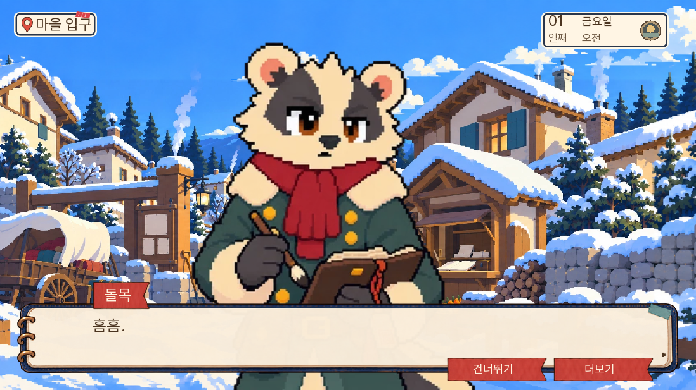
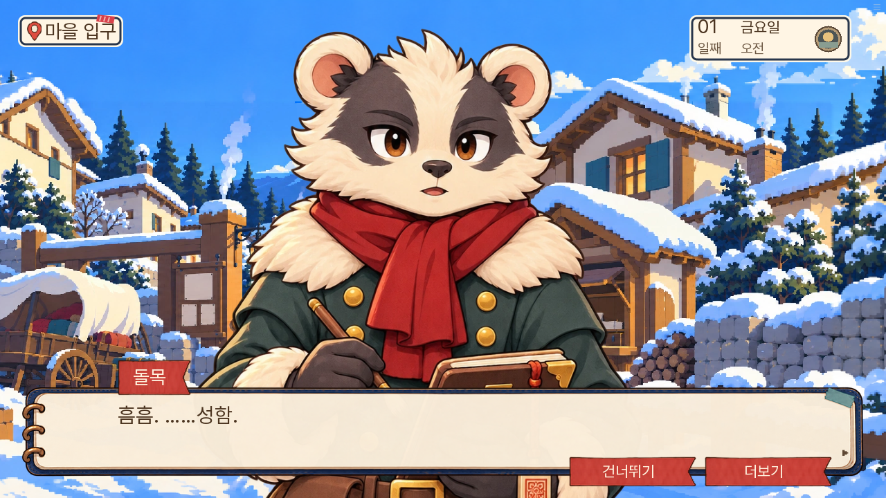

<!doctype html><html lang="ko"><meta charset="utf-8"><meta name="viewport" content="width=device-width,initial-scale=1"><title>돌목 대화 그림 전후 비교</title><style>body{margin:0;background:#0a1930;color:#f6e4c5;font:18px/1.6 system-ui,sans-serif}main{max-width:1500px;margin:auto;padding:28px}h1{font-size:28px}a{color:#edd096}.pair{display:grid;grid-template-columns:1fr 1fr;gap:20px}figure{margin:0}img{display:block;width:100%;border-radius:8px}figcaption{padding:10px 0}footer{margin-top:24px}@media(max-width:800px){.pair{grid-template-columns:1fr}}</style><main><h1>돌목 대화 그림 전후 비교</h1><p>같은 첫 대사에서 기존 그림과 새 원화를 비교했습니다. 새 그림은 표정 6종을 함께 제작했습니다.</p><div class="pair"><figure><figcaption>이전</figcaption></figure><figure><figcaption>변경 후</figcaption></figure></div><footer><a href="../../../../../preview/room13-dev/">게임 열기</a></footer></main></html>
